~A Few CSS Techniques~
4/1/2024
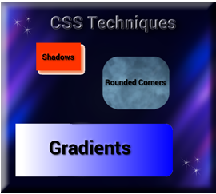
Box Shadows
Box- shadows are a really cool effect that you can add to something like a div. Here I made a div look like a box, by giving it a color, width, and height, and then I gave it the most simplest of shadows. This shadow will only specify a width and a height.
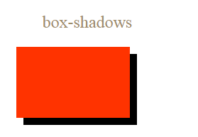
HTML
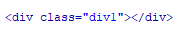CSS
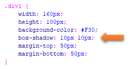
All you need to do to add a color to the box-shadow is to just add it
HTML
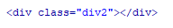CSS
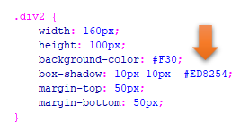Add a Blur Effect to the shadow
HTML
If you want a blur added you add that in-between the height and the color in the CSS rule like this.
CSS
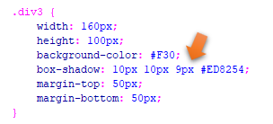
Add a Spread Radius of the Shadow
HTML
We add this right before the color is defined in the rule, like this
CSS
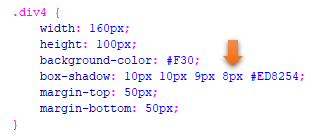
Set the inset Parameter
If you want to change the shadow to the other side, you would do that by specifying inset, right after the color definition in the rule. However, when you set the inset, and then set a spread radius, the spread radius will effect the top box and not the shadow underneath of it.
HTML
CSS
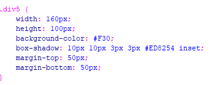
CSS Rounded Corners
You can give your div the appearance of rounded corners by using the border- radius.
I have set different border-radius on each one.
The first div takes a background color. The second div is just taking a border color, and the third div is taking an image. Make sure your image is in the same folder as your code and your image is linked correctly with the correct name.
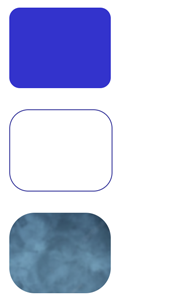
The HTML
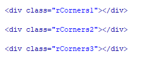
The CSS
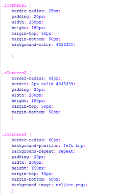
Gradients using Transparency
The last one that we will be working with today is how to make a div with a gradient. It will also be using some transparency.
CSS gradients will support transparency and it gives the div that fading of color effect. I will only be presenting 2 types of gradient effects, but if you want to learn about a few other types, you can go here to W3schools.
Gradient with Transparency
We will be creating the gradient inside of the background-image. This might sound somewhat strange at first, but after thinking about it creating the gradient inside of the background-image does make sense, since it is a type of background for the div.
This will be a linear gradient and it will start on the left and move to the right. If you look at the rule, you will see that it is stated in there to right, and that is what is telling it its direction to take.
It will be using rgba colors to represent the colors. If you put 255 in the first position, you get all red, 255 in the second position, you get all green, and 255 in the third position you get all blue. You will find that I have placed it in the b (third position), so I get all blue. The little a at the end of the rgba stands for alpha and that is what is making the left side appear to be transparent. Alpha is a value that is set from 0 to 1. Setting it at 0 will make it all transparent, and 1 will mean no transparency.
HTML
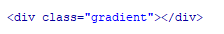
CSS
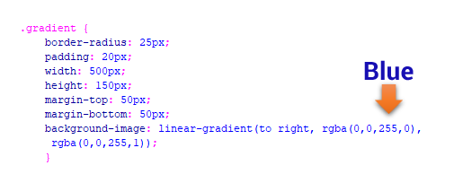
Plain Gradient
You can find a color pallet online, and then just take the colors to create a gradient
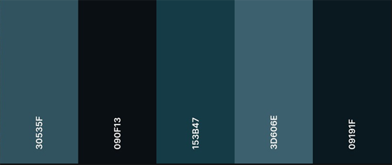
HTML
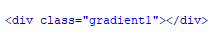
CSS
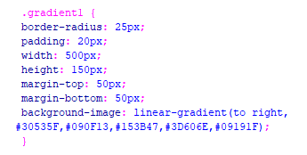
You can go here to check out what these different techniques look like, for your self.